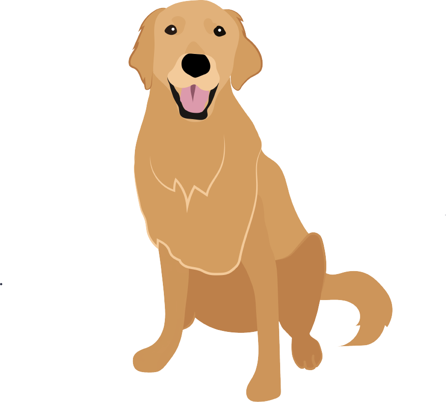

Happy and Approachable
I am happy, unstressed and calm.
When I am relaxed, I am approachable and feeling unthreatened.
Scroll over my body to notice my signals.

Play Bow
This means I’m ready to play. I am inviting you or another dog to play with me
and I am loose and wiggly. I may happy bark, or playfully jump from side to side.
Sometimes this will follow a previous play session where I may have been too rough.
This is my way of telling you I am nonthreatening and approachable for play.
Scroll over my body to notice some of my other signals.

Excited/Escalated
Excited is neither a bad emotion, nor a good one. When I’m excited, I could escalate
to being angry, overexerted, nervous, or overly happy. When this happens, I may hump,
nip, play bite, or jump. This is a good moment to help me reset!
Scroll over my body to notices some of my other signals.
Alert/Getting Information
This means I need more information. Something has caught my attention and
I need to assess the situation more before I know how to react. If my body
begins to shift forward and my body becomes more rigid, I may react negatively.
Scroll over my body to notice some of my other signals.
Anxious/Nervous
This means I would probably like to change the environment I’m in. My eyes
may be averting your gaze, and my body is low. I may be licking my nose,
lifting my paw to indicate I am harmless, and angling my body away from the
threat. At this point I am still submissive, and not going to attack. This
would be a good time to step in and remove me from the environment if possible.
Scroll over my body to notice some of my other signals.
Angry/Fearful and Reactive
If I am behaving this way, I may feel like you or another dog is intruding
on my space. If challenged, I will react. I may be snarling, growling, baring
my teeth and my ears may be either pinned back or fully standing up. You may
have entered my space or I am territorial over my food, toy or human. I am asking
you to leave my environment and back down.
Scroll over my body to notice some of my other signals.
 Resources
Resources